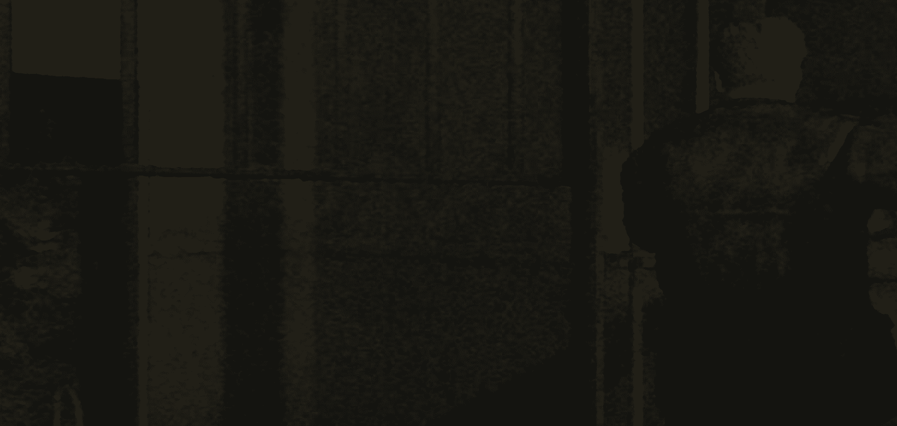
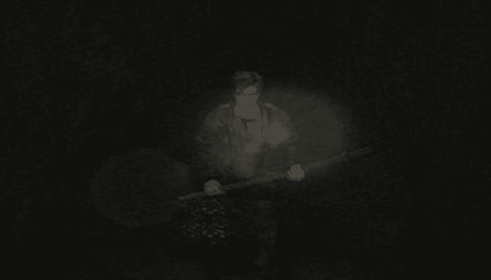

←Carta del cielo silencioso→
Las afueras de Silent Hill
El juego comienza con James dentro de un baño de una parada de descanso. En tu primera partida, no habrá nada aquí, así que simplemente sal. Inmediatamente después de tomar el control de James, sal del baño y saca el Mapa de Silent Hill de tu coche. La puerta del coche está abierta y el mapa está en el asiento del conductor, examina el asiento para recogerlo. Este mapa será muy útil al navegar por Silent Hill. Dirígete hacia abajo por la escalera al noroeste de tu coche, cerca de un letrero que señala hacia el Lago Toluca.
El camino neblinoso es muy lineal y eventualmente te llevará a un pozo. Investiga el pozo para encontrar la primera Plaza de Guardado. Continúa por el camino singular hacia el Cementerio. Una vez que entres al cementerio, se reproducirá una escena. James será recibido por una misteriosa mujer llamada Angela. Ella intentará advertirle que se aleje de la ciudad, pero James está decidido a entrar en ella. Después de la escena, sal por la puerta oeste. Una vez más, te enfrentarás a una larga caminata por un camino singular que lleva a la ciudad. Síguelo hasta que llegues a la Floristería en Silent Hill.
Calles del Silent Hill I
Después de seguir Wiltse Rd, saldrás a Sanders St, directamente frente a la Floristería. Toma un Kit de Primeros Auxilios en la mesa a la izquierda de la tienda y dirígete hacia el norte para activar una breve escena. Parece que hay un monstruo cerca. Sigue los rastros de sangre hacia el norte en la calle Lindsey y hacia el este en la calle Vachss. Cuando bajes por Vachss Road, encontrarás un pequeño área cerrada a la derecha. Entra por la puerta y encontrarás dos bebidas de salud y una Plaza de Guardado en una mesa. Una bebida de salud está cerca de la pata de la mesa, y otra está en la esquina inferior izquierda. Continúa por la carretera hasta que llegues a un túnel bloqueado. Investiga la abertura para entrar y comenzar una breve escena. Durante la escena encontrarás una Radio, una Tabla de Madera con clavos en un extremo, y un Monstruo con Camisa de Fuerza. Una vez que termine la escena, usa la tabla para golpear al monstruo hasta que muera. La radio emitirá estática si hay un monstruo cerca. Ahora puedes explorar Silent Hill, recoger objetos y luchar contra algunos monstruos; o simplemente seguir el camino correcto. Lo siguiente que necesitas hacer es conseguir una llave específica.
Esta llave se encuentra al final de Martin Street. Si necesitas llegar desde la primera pelea con el monstruo, ve hacia el oeste en Vachss Road, hacia el sur en Lindsey Street, hacia el oeste en Katz Street y hacia el norte en Martin Street. Al final de la calle hay un cadáver muerto y ensangrentado. Investígalo para encontrar la Llave de la Puerta del Apartamento. Examina la llave para ver que pertenece a los Apartamentos Wood Side, a solo dos cuadras al oeste. Dirígete allí ahora si quieres, o busca más por Silent Hill en busca de objetos. Puedes encontrar balas para pistola y un botiquín de primeros auxilios frente al Restaurante Lucky Jade de camino a los apartamentos. También habrá algunos Monstruos con Camisa de Fuerza acechando por allí. Recuerda, Silent Hill es un horror de supervivencia. ¡No tienes que luchar contra los monstruos! ¡Huye o lucha, es tu elección! Dos áreas a las que puedes entrar antes de ir a los Apartamentos Woodside son la Autocaravana en Saul Street y el Bar Neely en la esquina de Neely y Sanders. La Autocaravana no tendrá nada más que una Plaza de Guardado y una nota que dice "Encuéntrame en el Bar Neely". El Bar Neely está bastante vacío. Hay un mapa con algunas cosas tachadas en el mostrador y una nota escrita en rojo en la ventana. Cuando termines, dirígete e ingresa a los Apartamentos Wood Side.
Apartamentos WoodSide
Usa la Llave de la Puerta del Apartamento para abrir la puerta de los Apartamentos Wood Side. Hay dos puertas, una frente a ti y otra a la derecha. Entra por la puerta de enfrente. Dentro encontrarás un Mapa del Edificio de Apartamentos, una Bebida de Salud y una Plaza de Guardado. El mapa es lo más importante. Las líneas de garabatos rojos significan que nunca podrás abrir la puerta. Una línea roja sólida significa que hay una forma de desbloquear la puerta. James también marcará áreas importantes en el mapa. Aquí están los mapas completos de los tres pisos: Sube las escaleras y entra al Segundo Piso. Inmediatamente a tu derecha hay una lavandería, pero no habrá una puerta hacia la habitación. Si miras dentro del conducto de basura, notarás una bolsa de basura atascada. No puedes hacer nada por ahora, pero el mapa será marcado para más tarde.
Usa la Llave de la Puerta del Apartamento para abrir la puerta de los Apartamentos Wood Side. Hay dos puertas, una frente a ti y otra a la derecha. Entra por la puerta de enfrente. Dentro encontrarás un Mapa del Edificio de Apartamentos, una Bebida de Salud y una Plaza de Guardado. El mapa es lo más importante. Las líneas de garabatos rojos significan que nunca podrás abrir la puerta. Una línea roja sólida significa que hay una forma de desbloquear la puerta. James también marcará áreas importantes en el mapa. Aquí están los mapas completos de los tres pisos: Sube las escaleras y entra al Segundo Piso. Inmediatamente a tu derecha hay una lavandería, pero no habrá una puerta hacia la habitación. Si miras dentro del conducto de basura, notarás una bolsa de basura atascada. No puedes hacer nada por ahora, pero el mapa será marcado para más tarde. Puede haber uno o dos Monstruos con Camisa de Fuerza en los pasillos. ¡Siempre debes estar preparado para luchar o huir! El primer apartamento al que deberías entrar es el 205. Contendrá un objeto invaluable: la Linterna. Después de recogerla, un monstruo Maniquí te atacará. Mátalo o simplemente huye. En el 210 hay un Monstruo con Camisa de Fuerza y un Maniquí, así que prepárate para luchar. También dentro hay una caja de balas de pistola en el área de estar, sobre la mesa de café, y en la habitación del norte, sobre una mesita de noche. En el 208 hay un Rompecabezas de Reloj, pero no puedes resolverlo aún. No hay nada más que hacer en el segundo piso por ahora, así que vamos al tercer piso. Sube al tercer piso y encontrarás una puerta justo a la derecha. Al otro lado de la puerta hay una llave en el suelo. Investiga la puerta y el juego te preguntará si quieres recogerla. Di que sí para activar una breve escena. Dentro del 301, puedes encontrar una Pistola en un carrito de compras rojo. Agárrala, pero recuerda conservar tus municiones durante todo el juego. Guárdalas para las batallas contra los jefes.
Regresa al segundo piso después de tomar la pistola y ve al 208. El apartamento 208 es un poco diferente de la última vez que estuviste aquí. Habrá un cuerpo muerto al lado del televisor. Puedes investigarlo para ver una escena corta. En la estantería a la izquierda del cuerpo muerto está la Llave del Cuarto 202. Adivina a dónde nos dirigimos ahora. Entra en el Apartamento 202 y recoge la Bebida de Salud en la cocina. Ve al dormitorio para encontrar un agujero en la pared. Investiga el agujero para encontrar la Llave del Reloj. Hay una inscripción en el costado del reloj que dice: "Las cicatrices del pasado removerán el clavo que detiene el Tiempo". Después de leerlo, te preguntará si quieres empujar el reloj. La cara del reloj está detenida en diferentes momentos. La placa frontal estará bloqueada, impidiendo que muevas las agujas.
Después de obtener la Llave del Reloj del cuarto 202, debes encontrar la hora adecuada para mostrar en el reloj para que se mueva y te permita pasar a la siguiente área del edificio de apartamentos. Mira la pared en el lado opuesto de la habitación para obtener una pista sobre la hora correcta. Hay tres flechas dibujadas en la pared, similares a las manecillas de un reloj, y tres nombres: Henry, Mildred y Scott. Estos nombres son códigos para Horas, Minutos y Segundos. Simplemente convierte las flechas en una hora. Examina el reloj, luego usa la llave desde tu inventario. Abrirás la placa frontal, lo que te permitirá cambiar la hora. Cambia la hora a las 9:10:15 y escucharás un clic. Cierra la placa frontal y lee el lado del reloj para empujarlo hacia afuera. Detrás del reloj hay un agujero hacia el próximo Apartamento. Toma la Bebida de Salud en la cocina y guarda tu juego en la Plaza de Guardado en la pequeña mesa cercana.
Cuando hayas terminado, sal por la puerta principal y sube al tercer piso. En el camino hacia arriba, encontrarás una o dos cajas de balas para pistola. Tercer Piso Al igual que en los otros pisos, habrá muchos Monstruos con Camisa de Fuerza y Maniquíes merodeando por allí. Presta atención a tu radio. Entra en el Apartamento 307 para iniciar una escena. Cuando termine, mira de nuevo en el armario para encontrar la Llave del Patio. Sal al pasillo y dirígete hacia la Lavandería. Ahora que estás en este lado de la puerta, puedes recoger la Llave de la Escalera de Incendios del suelo. Revisa la Lavandería para encontrar una caja de balas para pistola. El Apartamento 303 contiene un botiquín de primeros auxilios en la sala de estar, una caja de balas para pistola en uno de los dormitorios en una cama, y una Bebida de Salud en la cocina. Cuando hayas terminado, ve al extremo este del pasillo y atraviesa la puerta al final. Baja las escaleras hasta el primer piso. Ve hacia la puerta trasera y agarra el paquete de Jugo en Lata. Sal por la puerta principal y entra por la otra puerta principal hacia el oeste.
Antes de subir al segundo piso, ve a la puerta trasera del primer piso y usa la Llave del Patio. Entra en el patio para encontrar la piscina comunitaria. Dentro de la piscina hay un cochecito de bebé y tres Monstruos con Camisa de Fuerza. Salta a la piscina e investiga el cochecito para encontrar la Moneda-Serpiente. Antes de volver a la entrada principal, echa un vistazo a los cuatro apartamentos del Este (101-104). Prepárate para más Monstruos con Camisa de Fuerza dentro. Entra por la puerta del baño para iniciar una escena con tu nuevo amigo Eddie.
Después de esta escena, busca una caja de balas para pistola en la sala de estar. El apartamento 104 no tiene mucho que ofrecer. En su interior hay una caja de balas para pistola custodiada por un Monstruo con Camisa de Fuerza. Una vez que hayas terminado con este piso, dirígete al segundo piso. Puedes subir por la escalera al final de esta área, o regresar al caso de escalera del área principal. Ve hacia la lavandería del segundo piso y examina el conducto de basura. Si recuerdas, había basura atascada aquí. Usa el Jugo en Lata para limpiar la basura. Sal afuera y busca dentro del montón de basura la Moneda del Viejo. Vuelve al segundo piso y camina hasta el final del Pasillo Occidental. Esta es la puerta en la que puedes usar la Llave de la Escalera de Incendios. Te permitirá moverte a los Apartamentos Blue Creek.

Apartamentos Blue Creek
Ahora deberías estar en los Apartamentos Blue Creek. Puedes volver a los Apartamentos Wood Side a través de esta ventana en cualquier momento. Cuando entres por primera vez al edificio, saltarás a una habitación misteriosa. Este es el Apartamento 203 en el segundo piso. Busca para encontrar una caja fuerte en la sala de estar y un inodoro obstruido en el baño. Investiga el inodoro para desatascarlo. Dentro encontrarás una cartera con una nota. Esta nota te dará la combinación de la caja fuerte. La combinación cambiará según el nivel de dificultad del enigma. Consulta la página de la combinación de la caja fuerte para obtener el código. Antes de salir del apartamento, agarra la bebida energética en la cocina. Sal al pasillo. Al principio no tendrás un mapa, así que vamos a buscar uno. Gira a la derecha por el pasillo y busca la salida. Entra por la puerta blanca hacia la que señala el letrero de salida. Dentro del hueco de la escalera está el Mapa del Edificio de Apartamentos del Oeste. Se conectará automáticamente con tu otro mapa de apartamento.
Apartamento 209 Este apartamento está cerrado con llave, pero hay una nota en él que indica dónde encontrar la llave, más o menos. Baja al primer piso ahora. Primer Piso Cuidado con los Maniquíes o Escarabajos en los pasillos. Dirígete al Apartamento 109 antes que a cualquier otro apartamento en este piso. Dentro hay una caja de balas para pistola en el sofá del salón. Busca una puerta de dormitorio y entra para ver una escena. Después de la escena, obtendrás el Cuchillo de Angela. Busca en la mesita de noche junto a la puerta la Moneda del Prisionero. Dentro de la habitación 105 hay un armario con una inscripción en el lateral. Necesitarás tres monedas, que deberías tener ya, para resolver el rompecabezas. La respuesta variará según la dificultad del enigma. Si no puedes resolverlo, consulta la página del Rompecabezas de Monedas. Dentro está la Llave de la Casa Lyne.
También dentro del apartamento hay un Cuadrado de Guardado en un estrecho corredor de armario. Cuando estés listo, regresa al segundo piso. El Apartamento 209 es el lugar donde usar la Llave de la Casa Lyne. Entra para encontrar la puerta trasera abierta al balcón. El balcón conduce al próximo apartamento, el apartamento 208. El 208 contiene la Llave de la Escalera del Apartamento y un Cuadrado de Guardado. Retrocede por el Apartamento 209 y ve al pasillo. Dirígete a la escalera del segundo piso al norte y usa la Llave de la Escalera del Apartamento. ¡Prepárate para pelear! Se reproducirá una escena corta con Pyramid Head y un Maniquí. Después de la escena, tendrás que enfrentarte a Pyramid Head uno a uno en una pequeña escalera. No puedes bajar las escaleras ya que están llenas de agua. Pyramid Head tiene dos ataques principales, su Gran Cuchillo y un ataque de estrangulamiento. Acércate lo suficiente a él y te agarrará del cuello, levantándote en el aire. Si esto sucede, presiona los botones de investigación y correr lo más rápido posible para escapar.
El otro ataque es un ataque fuerte o rápido con su Gran Cuchillo. Inflige suficiente daño para enviarlo a la escalera, drenando el agua. El mejor método es mantener la distancia y usar la Pistola. 35 disparos serán suficientes para derribarlo en Normal. Táctica Alternativa: Si prefieres guardar tus municiones, en realidad no necesitas pelear con Pyramid Head aquí. Simplemente corre de esquina a esquina evitando sus ataques. Después de tres minutos, sonará la sirena y se marchará sin haber disparado ni una vez. Dirígete hacia abajo por la escalera recién evacuada y sal al callejón de la Calle Munson. Ahora estás en la parte occidental de Silent Hill. El siguiente lugar al que debes ir es el Parque Rosewater.
Rosewater Park
Después de salir de los Apartamentos Blue Creek, puedes encontrar un Kit de Primeros Auxilios en una esquina del callejón. Tu próximo destino es el Parque Rosewater. No está demasiado lejos si sigues el callejón hacia el norte. En el camino hacia el parque te encontrarás con la chica de antes durante una escena corta. Sigue hacia el norte y encontrarás una escalera apartada a tu izquierda justo antes de llegar a la Avenida Nathan. Cerca de la parte superior hay dos cajas de balas para pistola. El Parque Rosewater no es demasiado grande, y puedes encontrar bastantes objetos en él. Presta atención a la cabeza de James para localizar fácilmente los objetos.
Camina hacia el norte hasta que veas un pequeño sendero a la izquierda (este). Camina por esta zona para encontrar algunas balas para pistola en el suelo. Desde allí, ve hacia el norte hasta que el sendero se reconecte con el primer sendero. ¡De nuevo, busca cualquier objeto alrededor! Dirígete hacia el norte hasta llegar al lago. Una vez que llegues al lago, ve hacia el este para comenzar una escena. Después de la escena, continúa un poco hacia el oeste y sigue el camino hacia el sur para salir del parque. Hay una zona más pequeña que se dirige hacia el este en el parque, pero no hay nada de interés allí... aún. Es hora de navegar nuevamente por las calles de Silent Hill.
Calles de Silent Hill II
Después de salir del Parque Rosewater, tendrás libertad para explorar Silent Hill nuevamente. Hay algunos lugares a los que debes ir y algunos lugares a los que puedes ir opcionalmente. Maria estará contigo todo el tiempo. Si estás tratando de conseguir el final de Maria, ¡asegúrate de que no resulte herida! Si Maria muere, el juego termina. Jack's Inn es un pequeño motel al sur del Parque Rosewater. Puedes encontrar una Plaza de Guardado en la parte trasera de uno de los autos. Dirígete al oeste hacia Texxon Gas. Aquí encontrarás un auto con una tubería de acero en su interior todavía en marcha. Saca la tubería del auto para añadirla a tu inventario como arma. Busca alrededor de un gran camión blanco cercano. En la parte delantera encontrarás algunas balas para pistola y bebidas energéticas. Dirígete al oeste de Texxon Gas hacia Pete's Bowl-O-Rama. Puedes encontrar una bebida energética en la acera a lo largo de Nathan Street. Entra en Bowl-O-Rama por la puerta en la parte norte del edificio. Entra por la puerta para una escena corta. Una vez dentro, entra por la puerta de la izquierda para otra escena corta.
Después de la escena, ve por la puerta al otro extremo de la habitación, esta puerta conduce a las pistas de bolos. Se reproducirá otra escena corta. Después de la escena, ve al final de la cuarta pista para encontrar una caja de balas para pistola. Puedes hablar de nuevo con Eddie para otra escena corta. Sal de Bowl-O-Rama. Se reproducirá una escena corta con Maria diciéndote que encuentres a Laura. Corre por el lado este del edificio para encontrar una valla de un callejón. Atraviesa la valla y dirígete por el callejón. El callejón termina con una pared de cemento, pero Maria te dirá que pases por Heaven's Night. Sube las escaleras y entra en el bar. Dentro encontrarás un botiquín en una silla. Sal por el otro extremo para acabar en Carroll Street. Continúa hacia el sur en Carroll St. Eventualmente, llegarás al Hospital Brookhaven.
Hospital Brookhaven
Ahora que estás en Brookhaven, te enfrentarás a un nuevo enemigo: la Enfermera. Mira directamente a tu izquierda para encontrar el mapa del hospital. Camina hacia adelante y entra por la puerta que tienes justo enfrente. Planta Baja (1F) Oficina de Recepción La primera puerta en el hospital te lleva a la Oficina de Recepción. Dentro encontrarás la Plaza de Guardado, guárdate si lo deseas. Camina hacia la puerta de la izquierda para encontrar una bebida energética en la mesa. Entra por la puerta para encontrar la Sala de Documentos. Sala de Documentos Dentro de la sala de documentos hay un escritorio al lado de Maria. Investígalo para encontrar la Llave Morada. No se puede hacer nada más en esta planta en este momento, así que sube al segundo piso por la escalera. El pasillo del segundo piso contiene una o dos Enfermeras y un Maniquí. Lucha o corre. Ve hacia el norte para encontrar dos puertas sin cerradura. Vestuario de Hombres Dentro del Vestuario de Hombres hay un abrigo de doctor ensangrentado. Investígalo para encontrar la Llave de la Sala de Examen. Dentro del Vestuario de Mujeres hay un oso de peluche en una mesa. Investígalo para obtener la Aguja Doblada. El armario junto al oso contendrá la escopeta superpotente. Vuelve al pasillo y entra por la puerta opuesta a la escalera. Esta es la puerta del ala de pacientes. Ala de Pacientes (2F) Justo cuando entras al pasillo, encontrarás una caja de balas para pistola en un barril. Sala de Examen 3 Dentro de la Sala de Examen 3 hay un botiquín en una cama. Camina hacia el fondo de la habitación e investiga la máquina de escribir. La máquina de escribir te dará una nota con la combinación para el Rompecabezas de la Caja. M2 es una habitación pequeña con una caja de balas para pistola en una mesita de noche. Dentro del cajón está la Llave de Ojo Lapis.
M3 contiene una Enfermera que vigila una caja de balas para pistola y una bebida energética. M6 contiene una Enfermera que vigila una caja de cartuchos de escopeta y una bebida energética. Ahora que el segundo piso ha sido completamente explorado, baja por la escalera hasta el primer piso. Ve a la Sala de Examen cerca de la Oficina de Recepción primero. Estaba cerrada antes, pero ahora tenemos la Llave de la Sala de Examen para abrirla. Ve por la puerta dentro de la Sala de Examen para entrar en el Salón de Doctores. El Salón de Doctores tiene una caja de cartuchos de escopeta en el lavabo. Investiga el tablero blanco al otro lado de la habitación para encontrar una nota con el código de la puerta. Las dificultades de los enigmas Fácil y Normal tendrán el código de la puerta. La dificultad Difícil tendrá un enigma para el código. Si no puedes resolverlo, consulta la página del Código de la Puerta. Si olvidaste el código o el enigma, revísalo en las notas en el menú. Este código abre la puerta del ala de pacientes en el tercer piso. Ve allí después. El Tercer Piso tiene algunas Enfermeras caminando. Ve hacia el este hasta el Ascensor para encontrar un botiquín en el suelo. Ve al Ala de Pacientes e introduce el código que encontraste en el Salón de Doctores. S3 Entra en S3 para iniciar una escena. Maria descansará en la cama mientras buscas a Laura. Revisa la mesita de noche junto a Maria antes de irte para encontrar la Llave del Tejado. S11 contiene una Plaza de Guardado en la pared y una bebida energética en la cama. S14 S14 tiene una misteriosa caja atada a una cama con una nota escrita en sangre en la pared. Hay muchas cerraduras que no podemos abrir por el momento. Déjala ahí por ahora. Dentro de la sala de duchas hay un desagüe con algo atascado en él. No puedes sacarlo por ahora, pero recuerda la habitación.
El tercer piso está despejado por ahora, así que dirígete al tejado. Intenta abrir la puerta que conduce a la escalera. Deberías notar que ahora está cerrada con llave. Camina hacia la otra puerta para iniciar una escena que te lleva de vuelta al tercer piso. Tercer Piso Sala de Tratamiento Especial Después de la escena, verifica tu salud de inmediato, es posible que apenas te quede algo. Investiga las cuatro celdas acolchadas en esta área, solo una se abrirá. En la celda desbloqueada, descubrirás sangre escrita en la pared. Investiga la sangre para obtener una combinación para una de las cerraduras en la caja de la sala S14. La combinación estará en tus notas. Ahora tienes suficiente información y llaves para abrir la caja en S14. S14 Regresa a S14 para abrir la caja. Si olvidaste los códigos, revisa tus notas para los mensajes "Impresión en Papel Carbón" y "Tern tern tern the number". Usa primero la Llave de Ojo Lapis, el código "Impresión en Papel Carbón" segundo, el código "Tern tern tern the number" tercero, y la Llave de Toro Púrpura cuarta. Si tienes problemas, consulta la página del Rompecabezas de la Caja. Dentro de la caja encontrarás un Pelo. A continuación, dirígete de vuelta a la Sala de Ducha. Sala de Ducha Ahora que tenemos los elementos necesarios, combina el Pelo con la Aguja Doblada para recuperar la Llave del Ascensor del desagüe. Si intentas usar el ascensor en el ala de pacientes del tercer piso, verás que hay una cerradura en la puerta. Usa la Llave del Ascensor y baja al primer piso. Primer Piso Dado que bajaste en el ascensor, ahora tendrás acceso al ala de pacientes. C3 C3 es una habitación pequeña con una caja de balas para pistola y una caja de cartuchos de escopeta a cada lado de la habitación. C2 ¡Entra a C2 con salud completa y una escopeta lista! Si quieres, puedes dirigirte al área de recepción para guardar tu juego.
Camina hacia el fondo de la habitación para iniciar una escena, que te llevará a una batalla contra un jefe. Batalla contra el Jefe: Labios Carnosos Intenta mantenerte alejado de los Labios Carnosos tanto como sea posible. Dos golpes pueden matarte fácilmente estando con toda la salud. Atacan agarrando tu cabeza y tirando hacia arriba. Cuando esto suceda, presiona los botones de investigar y correr tan rápido como puedas para escapar. Después de matar a los dos primeros, caerá un tercero desde el techo. Usar una escopeta o una pistola será tu mejor opción para derrotar a los Labios Carnosos. Cinco cartuchos de escopeta por cabeza serán suficientes para derribar a estos tipos en Normal. Jardín Después de la pelea, estarás en el jardín del hospital. Toma la única puerta disponible de regreso al Primer Piso del Hospital, que ahora está cambiado al Otro Mundo.
Hospital Brookhaven- Otromundo
! Después de la pelea con Flesh Lips, estarás en el jardín del hospital. Toma la única puerta disponible de regreso al primer piso del hospital, que ahora está cambiado al mundo alternativo. Aunque conservarás tu mapa, todas las marcas anteriores desaparecerán. Aquí tienes un mapa completo del área: Planta Baja (1F) A la derecha hay una Plaza de Guardado y una caja de cartuchos de escopeta en el suelo. Entra en el ala de pacientes y revisa todas las puertas. C2 C2 contiene una Enfermera con una tubería de acero. Acábala rápidamente y coge el botiquín de primeros auxilios en la cama. C1 C1 tiene otra Enfermera con una tubería de acero. Elimínala y coge la bebida energética y la caja de balas para pistola en las camas detrás de ella. Todas las demás puertas están cerradas con llave, así que toma el ascensor hasta el segundo piso. Segundo Piso El segundo piso tendrá algunas Enfermeras en el pasillo. ¡Prepárate para ellas! M6 Dentro de M6 hay una pintura espeluznante en la pared este. Investígala para encontrar la Batería Seca y la Llave del Almacén del Sótano. Busca alrededor de la habitación antes de salir para encontrar una caja de balas para pistola y un botiquín de primeros auxilios. También puedes leer una nota en la cama cerca de la pintura. M4 M4 contiene dos Enfermeras que blanden tuberías, ¡prepárate! Detrás de ellas hay una caja de cartuchos de escopeta y una bebida energética. Sala de Día La Sala de Día es una habitación pequeña sin salida. Puedes encontrar un refrigerador en el suelo, pero no podrás abrirlo solo. Tendrás que volver más tarde. Ahora que el segundo piso está despejado, toma el ascensor hasta el tercer piso.
Tercer Piso Mira directamente a la derecha (izquierda de James) cuando salgas del ascensor. Habrá una pintura con brazos en 3D en la puerta de la escalera. Por ahora no puedes hacer nada con ella, pero recuerda su ubicación. Como el último pasillo, el tercer piso tendrá algunas Enfermeras merodeando. S11 S11 es una habitación pequeña con una caja de balas para pistola y una ampolla. Busca la nota en la cama para encontrar algo interesante. S3 S3 es la habitación en la que dejaste a Maria. Échale un vistazo para encontrar una cama vacía y algunas botellas de pastillas. Puedes escuchar a alguien respirando, pero no hay nadie alrededor. Almacén Dirígete al almacén para encontrar una caja de balas para pistola, cartuchos de escopeta y un botiquín de primeros auxilios. Por ahora hemos terminado con el almacén, pero volveremos más tarde. Ahora que el tercer piso está despejado, toma la escalera al sur de la Sala de Tratamiento Especial. Dentro encontrarás una Plaza de Guardado justo al entrar. Dirígete todo el camino hasta el sótano. Sótano En la parte inferior hay una puerta cerrada con llave. Usa la Llave del Almacén del Sótano para abrirla y entra. Almacén Dentro del Almacén del Sótano encontrarás una caja de cartuchos de escopeta en el suelo. En el lado izquierdo de la habitación hay un estante blanco con huellas rojas de manos. Investiga el lado izquierdo para moverlo, revelando una escalera que conduce al sótano del sótano (¿te suena familiar?). Interactúa con la escalera para iniciar una escena corta. Después de la escena, baja por la escalera. Sótano del Sótano Encontrarás una habitación muy pequeña en el fondo de la escalera. Busca alrededor del suelo una mancha de sangre. Investígala para recoger el Anillo de Cobre. Hemos terminado aquí, así que regresa a la Sala de Día en el Segundo Piso.
Cuestionario del Elevador del Tercer Piso Toma el ascensor del tercer piso para volver al segundo. En tu camino del Tercer al Segundo Piso, una voz te hará preguntas. Ve a la Sala de Almacén del Tercer Piso para responder a las preguntas y recibir tu premio (estarás volviendo en esa dirección en poco tiempo). En el ascensor, escucharás al anunciador pedirte que ingreses tus respuestas en la Sala de Almacén del Tercer Piso. Entra en la Sala de Almacén para encontrar una extraña caja con nueve botones en la parte superior. Estos nueve botones serán las respuestas a las preguntas que te hicieron anteriormente. El lado izquierdo indica la pregunta y la parte superior indica las respuestas.
Pregunta Uno Carrousel, casa embrujada, montaña rusa, rueda de la fortuna y tazas de té. Silent Hill es hogar de un emocionante parque de atracciones que tanto los niños como los adultos aman. La pregunta es: ¿Cuál es el nombre de este parque de atracciones? Fantasy Land Parque de Atracciones de Silent Hill Parque de Atracciones Lakeside Pregunta Dos Silent Hill fue testigo de un horrible asesinato hace unos años. Un hermano y una hermana estaban jugando en la carretera cuando fueron atacados y desmembrados con un hacha. Carne desgarrada, huesos rotos, sangre salpicada y finalmente... ¡Qué tragedia tan terrible! ¿Qué horrible fin para vidas tan inocentes? ¿Cuál era el nombre del asesino que cometió este acto vil? Walter Sullivan Scott Fairbanks Eric Gein Pregunta Tres Al sur del lago hay un vecindario antiguo y desolado llamado South Vale. Desde allí hasta Paleville, el área de resort central al noroeste del lago, solo hay una carretera que puedes tomar. Solo una carretera, nada más. La tercera y última pregunta es: ¿Cuál es el nombre de esa carretera? Bachman Road Rendell Street Nathan Avenue Recompensas Si aciertas todas las respuestas, recibirás: ADVERTISEMENT Cartuchos de escopeta x 5 Ampolla x 2 Si respondes incorrectamente, saldrá una niebla del techo que te quitará algo de salud.
Segundo Piso Sala de día Ahora que tienes a Maria, puedes abrir el refrigerador dentro de la Sala de día. El refrigerador contendrá el Anillo de Plomo. A continuación, regresa al tercer piso. Puedes responder las preguntas del ascensor o continuar. Tercer Piso Si recuerdas de antes, hay una pintura en la puerta con brazos asomándose. Usa el Anillo de Cobre y el Anillo de Plomo para abrir la escalera. Baja por el primer tramo de escaleras y encontrarás una nota azul en el suelo, investiga para obtener la nota "Tomé la llave del director". Desciende al sótano. Batalla de jefe / Encuentro - Pyramid Head Tan pronto como llegues al sótano, comienza a familiarizarte con la forma en que corres por los pasillos. Correr es básicamente todo lo que haces en este encuentro. Este encuentro sucederá instantáneamente al entrar en esta área. Corre hacia el ascensor para sobrevivir. Esto irá mucho más suavemente si tienes controles en 2D. Simplemente sigue presionando hacia abajo para llegar al final. Vestíbulo del hospital El ascensor se abrirá después de la breve escena. Ahora estás en el vestíbulo del hospital en el primer piso. Todas las puertas en esta área están cerradas con llave, excepto la del Cuarto del Director. También puedes encontrar una Plaza de Guardado al lado de la entrada, pero, al igual que las otras puertas, también está cerrada con llave. Cuarto del Director Investiga la mesa para obtener la Llave del Vestíbulo del Hospital, tres nuevas ubicaciones en el mapa y para ver a Laura alejándose. Usa la llave para salir de nuevo a Silent Hill.
Las calles del Silent Hill
Has salido del otro mundo versión del Hospital Brookhaven, pero nunca dejaste el otro mundo. Silent Hill ha cambiado desde la última vez que lo viste. La niebla ha sido reemplazada por pura oscuridad y las enfermeras deambulan por las calles. Todavía encontrarás maniquíes caminando también, pero recuerda, no tienes que luchar contra ellos. Todavía puedes encontrar muchos objetos por las calles. Tu próximo destino es la Sociedad Histórica de Silent Hill. Si vas allí ahora, no podrás entrar. Encontremos primero la llave. Hay tres ubicaciones marcadas en tu mapa desde que saliste del hospital. La primera es la llave inglesa. Encontrar la llave inglesa La llave inglesa está ubicada en el porche delantero de una casa cerca del Restaurante Mexicano Gonzale en el Este de Silent Hill. Para llegar allí, usa el túnel hacia el Sur que conecta el Oeste con el Este. Sigue el siguiente camino: Sur en la calle Carroll Este en la calle Rendell Sur en la calle Munson Este en la calle Saul (a través del túnel) Norte en la calle Neely Este en la calle Sanders Norte en la calle Lindsey
El túnel tendrá un nuevo enemigo llamado el "Closer". Estos tipos solo se quedarán debajo de las rejillas de acero, así que esquivarlos no debería ser demasiado problema. Investiga el frente de la casa para encontrar una carta y una llave inglesa. Encontrar la llave Ahora que tienes la llave inglesa, podemos encontrar la llave de la Sociedad Histórica. Toma la calle Lindsey hacia el Norte hasta llegar a la calle Katz. Desde aquí, continúa hacia el Oeste hasta llegar a los Apartamentos Blue Creek. Alrededor de esta área hay una gran puerta en medio de la carretera. Úsala para volver al lado Oeste de Silent Hill. Tu próximo destino es el Parque Rosewater. Entra al Parque Rosewater desde el lado Oeste. Busca una estatua en una pequeña sección del parque. Camina detrás de la estatua para encontrar tierra suelta. Investiga la tierra y elige excavarla. Dentro del suelo hay una caja atornillada. Usa tu llave inglesa aquí para abrirla y agarra la Llave de Bronce Antigua. Ahora podemos abrir la puerta del Museo. Dirígete al Noroeste por la avenida Nathan hasta llegar a la Sociedad Histórica de Silent Hill.
Silent Hill Historical Society
Tan pronto como entres en la Sociedad Histórica, mira a tu izquierda para encontrar un Cuadro de Guardado. Camina hacia la siguiente habitación y verás algunas pinturas a la izquierda. Una de las pinturas muestra a Pyramid Head rodeado de lo que parecen ser Flesh Lips. Ve a la siguiente habitación para encontrar más pinturas en una pared y un agujero en la otra. Las pinturas en una de las paredes hablan sobre la historia del Hospital Brookhaven. Atraviesa el agujero en la pared y baja por las largas escaleras. Parecerá una eternidad, pero eventualmente llegarás al fondo. Ve a través de la puerta hasta la próxima habitación. Esta próxima habitación es bastante pequeña. Toma el Botiquín de Primeros Auxilios de la mesa y ve a través de la siguiente puerta. Esta área tiene un pasillo corto y algunas habitaciones conectadas a él. Habrá algunos Camisas de Fuerza en el pasillo, así que prepárate. Gira a la izquierda en el pasillo y entra por la puerta a la derecha. Dentro hay algunas pinturas más y una caja de Balas de Pistola. Llega hasta la última puerta al final del pasillo para encontrar un pozo oscuro en el medio de la habitación. Investígalo y salta dentro.
Una vez que llegues al fondo del pozo, te darás cuenta de que estás dentro de un pozo. Una pared de ladrillos te rodea. Investiga las paredes hasta que llegues a un punto que sea diferente de las demás. Equipa la Llave de Tubo de Acero y golpea la pared hasta que se rompa, exponiendo una puerta. Entra por la puerta para encontrar otro pasillo pequeño con Camisas de Fuerza dentro. Continúa por aquí hasta llegar a dos puertas. Entra por la puerta de la derecha, que será la única desbloqueada. Pasa por la siguiente puerta a la derecha para encontrar una pequeña habitación alfombrada. Agarra la Llave de Escritura Espiral en el suelo y tu luz se apagará. Usa la Batería de Celda Seca que obtuviste del hospital para encenderla nuevamente. Deberías notar de inmediato Escarabajos en todas las paredes de la habitación. La puerta estará cerrada con llave, pero habrá un teclado electrónico a la derecha de la puerta. Investígalo y notarás que algunos de los botones están resaltados. Adivina el código y sonará si lo has acertado. Si te equivocas, sonará un zumbido. Algunas soluciones posibles son: 1-8-2, 8-1-5 y 3-1-9. Entra en la siguiente habitación al final del pasillo para encontrar una puerta de acero en el suelo. Usa la Llave de Escritura Espiral que acabas de obtener para desbloquear la puerta. Salta por este agujero para continuar hasta la Prisión de Toluca.
Prisión Toluca
Toma a la izquierda y revisa los escritorios a lo largo del Pasillo Central. El primer escritorio tendrá una caja de balas para pistola, y el segundo tendrá el mapa de la prisión. Aquí está el mapa completo de la prisión: Entra por la primera puerta a tu izquierda (Oeste). Dentro encontrarás un botiquín. Verás un encendedor al otro lado del cristal, pero no hay forma de romperlo. Sal de nuevo al pasillo central. Entra por la siguiente puerta a la izquierda para encontrar un pasillo que conecta con el pasillo Oeste. Pasillo Oeste Toma el pasillo Oeste para llegar al otro lado del primer puesto de visitantes. Dentro encontrarás el encendedor que viste un poco antes. Sigue bajando por el pasillo Oeste y revisa las puertas. La próxima puerta a la izquierda (Este, ya que vas bajando) no tendrá nada útil, pero puedes investigar la cabina del inodoro por diversión. La última puerta a la izquierda (Este) tendrá un Cuadro de Guardado dentro. Entra por la puerta al otro lado del pasillo del baño. Dentro encontrarás un Straight Jacket, ¡así que prepárate para pelear! Elimina al Straight Jacket y toma el botiquín de primeros auxilios sobre la televisión y una Ampolla en el lavamanos a la derecha. Esta habitación también tiene una Bebida Energética en una silla y una revista en una mesa. La revista tiene más historia de Silent Hill. Ve por la puerta al fondo de la habitación para encontrar un armario de armas. Dentro está el poderoso Rifle de Caza y algunas cajas de munición para las tres armas de fuego. Sal de nuevo al pasillo.
Antes de salir de este pasillo, puedes ir hasta el final del Sur e investigar una trampilla. No podrás abrirla, ¡pero recuerda dónde está! Dirígete al Pasillo Central para investigar el resto de la prisión. Pasillo Central La siguiente parada será las duchas entre las celdas del Norte y del Sur. Las Celdas del Norte estarán cerradas desde el Pasillo Central. Duchas Habrá dos Straight Jackets en esta área, así que prepárate para pelear. Es un pasillo muy estrecho y no hay forma de pasarlos. Toma el camino del Norte hasta la última ducha. Dentro encontrarás la Tableta de la Seductora. No hay nada más en esta área, así que regresa al pasillo principal y revisa las Celdas del Sur. Celdas del Sur La mayoría de las celdas están cerradas en esta área, pero habrá dos celdas abiertas que puedes encontrar en el mapa. También puedes encontrar muchos Straight Jackets en las celdas y caminando por el pasillo. La primera celda (desde la izquierda) tiene una caja de balas para pistola.
La segunda celda tiene muchos libros interesantes, pero lo más importante es la Muñeca de Cera. Sal al Pasillo Este. Pasillo Este Hay tres puertas abiertas en el Pasillo Este. Toma la puerta de la izquierda (Oeste) entre las Celdas del Norte y del Sur primero. Sala de Suministros Esta pequeña habitación contiene un Straight Jacket y una caja de balas para rifle. Las balas valen la pena en un Straight Jacket. Regresa al Pasillo Este y entra en las Celdas del Norte. Celdas del Norte A diferencia de las Celdas del Sur, aquí tendrás que revisar cada celda para ver cuáles están desbloqueadas. La primera celda desbloqueada (desde la derecha) tiene algunas pinturas diferentes, pero nada importante. La segunda celda desbloqueada (desde la derecha) contendrá el objeto Tableta del Opresor. La celda se bloqueará cuando intentes abrirla las primeras veces. Sigue intentando hasta que se abra. Puedes desbloquear la puerta que conduce al Pasillo Central, pero primero necesitas ir a la Horca. Toma la puerta del Pasillo Este hacia el Este.
Horca Dirígete al patio para encontrar la horca. Inserta las tres tabletas que has recogido alrededor de la prisión en la parte delantera de la horca. Regresa a la puerta de las Celdas del Este para encontrar la Horseshoe. Ahora tenemos todos los elementos que necesitamos. Dirígete a la Trampilla del Pasillo Oeste. Combina la Horseshoe, la Muñeca de Cera y el Encendedor para crear un mango improvisado que abre la trampilla del suelo. Salta por la trampilla para llegar a una puerta. Cruza la puerta para encontrar la morgue. No hay nada aquí, así que continúa por la siguiente puerta para encontrar otro agujero. Salta por este agujero y abre la puerta para encontrar otro agujero. Salta por este agujero para llegar a un ascensor. Dentro del ascensor encontrarás un botiquín de primeros auxilios, balas de rifle, balas de escopeta y balas de pistola. El ascensor descenderá hasta la siguiente área. Sal del ascensor y avanza para encontrar un Cuadro de Guardado junto a una puerta que lleva al Laberinto.
El laberinto
Al ingresar al Vestíbulo de Entrada del Laberinto, de inmediato notarás una puerta bloqueada por cables. Aunque no puedas ocuparte de ella aún, recuerda su ubicación, ya que regresarás más tarde. Mientras te aventuras en el laberinto, encontrarás varios Maniquíes. Aunque puedes optar por enfrentarlos en combate, pasar corriendo puede ahorrarte tiempo. Si decides luchar, tu Escopeta puede resultar efectiva, posiblemente alcanzando múltiples objetivos a la vez. Ignora el camino que lleva al sur ya que es un callejón sin salida. En cambio, continúa hasta llegar a una bifurcación donde puedes girar a la izquierda (Norte) o a la derecha (Sur). Comienza dirigiéndote a la izquierda para descubrir un valioso nuevo arma. Avanza hasta llegar a otra bifurcación. Independientemente de la dirección que elijas, ambos caminos eventualmente te llevarán a escaleras que te dejarán en el mismo pasillo.
Ahora estás en un pasillo circular (bueno, técnicamente es octagonal). Ten en cuenta que Pyramid Head merodea por este pasillo, pero no entres en pánico. Si lo ves, simplemente gira y corre en la dirección opuesta y deberías estar bien. Además, trata de no quedarte mucho tiempo en los suelos con rejillas, ya que debajo hay algunos "Closers" que pueden lastimarte. En el lado oeste de este octágono hay un pasaje corto que conduce a una habitación en el centro. Ve allí para encontrar dos cajas de cartuchos de escopeta y la antigua arma de Pyramid Head, el Gran Cuchillo. Es muy lento y tosco, pero también extremadamente poderoso. Ahora que tienes tu nuevo juguete, regresa arriba a través de cualquiera de las escaleras. Dirígete de vuelta a la primera intersección en el vestíbulo de entrada y toma el camino que omitiste (Sur).
Sigue el pasillo hasta que termine en un descenso con una escalera. Baja por ella hasta un túnel pequeño y acuoso. Este tramo corto de túnel tiene uno o dos "Straight Jackets" vagando. Haz lo que consideres necesario con ellos y avanza hacia el otro extremo del pasillo, donde encontrarás otra escalera. Sube por ella y estarás en la habitación con un rompecabezas de cabeza giratoria. Estas dos habitaciones forman parte de un rompecabezas. La primera habitación contiene una cabeza cuadrada giratoria. La segunda habitación es un cuarto cuadrado con puertas en cada uno de sus lados. Gira la cabeza cuadrada para rotar la habitación. El objetivo es colocar una puerta cerca del rompecabezas y otra puerta en el extremo opuesto de la habitación. Solución Dificultad de la adivinanza fácil y normal: ARRIBA, ARRIBA y IZQUIERDA. Dificultad de la adivinanza difícil: ABAJO e IZQUIERDA. Dificultad extra de la adivinanza: IZQUIERDA, IZQUIERDA, ARRIBA, IZQUIERDA. Una vez que hayas resuelto el rompecabezas de la cabeza giratoria, pasa por la nueva abertura en la pared y se reproducirá una escena cortada. Después de la escena cortada, retrocede pasando el rompecabezas de la cabeza giratoria. Es posible que escuches un ruido extraño. El interruptor de circuito está roto con algo sobresaliendo. Investígalo para obtener un par de corta alambres. Ahora que tenemos los corta alambres, podemos cortar los cables al principio del Laberinto.
Regresa a la entrada del Laberinto y corta los cables que bloquean la puerta. Al otro extremo hay una escalera que lleva a otro túnel. Estate atento a cualquier "Straight Jacket" que esté caminando por ahí. Los siguientes túneles y pasillos pueden parecer difíciles de navegar. Simplemente mira los mapas ya completados para ver hacia dónde ir. Usarlos junto con esta guía escrita hará las cosas mucho más fáciles. En este túnel, toma el primer camino a tu derecha (Sur). La escalera al final del túnel (Este) lleva a un callejón sin salida inútil, así que evita esa área. Sube por la escalera, avanza y gira a la derecha en la intersección. Si giras a la izquierda, llegarás a un callejón sin salida con un "Straight Jacket". Sigue este pasillo hasta otra escalera que lleva hacia abajo. Desde el fondo de esta escalera, ve hacia adelante y luego dirígete en cualquier dirección, ya que ambos caminos terminarán en el mismo destino. Sube por la escalera en la región noreste de este túnel. Para llegar a la siguiente escalera, sigue el pasillo y gira a la derecha en la primera intersección, luego a la izquierda en la siguiente. No hay nada más aquí aparte de uno o dos "Straight Jacket", así que realmente no vale la pena buscar. Desde el fondo de esta escalera, toma el primer camino a la izquierda (sur) que encuentres. El otro camino te llevará a un callejón sin salida y a un "Straight Jacket". Sube por la escalera hasta otro pasillo. En la parte superior de la escalera, te recibirán uno o dos "Straight Jacket". No te pierdas la caja de balas de pistola cerca de la escalera tampoco. Camina hacia el otro extremo del pasillo y baja por la siguiente escalera. Hay dos caminos que puedes tomar en esta área. Uno tendrá dos cajas de balas de pistola, pero también tendrás que lidiar con Pyramid Head y un "Straight Jacket" que merodean por ahí. Sin embargo, es bastante fácil evitarlos, así que no dejes que eso te desanime. Toma el primer camino a la derecha y síguelo hasta que se abra en una habitación. Busca la escalera en la pared oeste, que lleva a un callejón sin salida que contiene las balas mencionadas anteriormente. Ya sea que elijas recogerlas o no, tu objetivo principal es subir por la escalera al final del pasillo corto que se dirige hacia el este desde donde entraste por primera vez en esta área. Emergerás frente a una puerta con una Plaza de Guardado. Busca en el suelo para encontrar un artículo de periódico con sangre que cubre algunas palabras. Si has jugado el juego antes, este artículo puede tener más sentido ahora. Camina hacia el siguiente pasillo para iniciar una batalla contra un jefe...
Abstract Daddy solo tendrá un ataque. Este ataque llega hacia arriba hacia tu cabeza para causar daño, casi como un abrazo de una criatura de cuatro patas. Cuando lo haga, presiona los botones de investigar y correr para salir rápidamente y corre hacia el otro lado de la habitación. Cuando te enfrentes a él, será en una habitación muy pequeña sin ningún lugar a donde ir. Si se acerca, puedes intentar correr hacia el otro lado de la pequeña habitación. Aunque, eso solo será unos cinco pasos. Usa el Rifle de Caza o la Escopeta para acabar rápidamente con él. En otras jugadas, puedes usar el ataque fuerte de la Motosierra para derribarlo y atacar mientras se levanta. Después de haber derrotado al jefe, sal de la habitación y continúa hacia el siguiente pasillo. Este pasillo tendrá tres puertas. La última puerta llevará a unas barras de acero con un par de esposas encadenadas a una válvula de agua. Necesitaremos la llave. Para obtener la llave, necesitaremos resolver otro rompecabezas. Regresa al pasillo y entra por la puerta al lado de la última puerta. Dentro hay seis lazos y dos notas en la pared. Una de las notas tendrá el acertijo necesario para resolver el rompecabezas. El acertijo y las respuestas cambiarán dependiendo de la Dificultad del Acertijo. Ve a la otra habitación para ver seis cuerpos falsos en la misma posición que los lazos. Investiga cada rostro para ver cuáles fueron sus crímenes. Debes descubrir cuál de estos hombres era inocente. Cuando lo descubras, tira del lazo que está en la misma posición que el cuerpo del hombre inocente.
Regresa a la primera habitación para encontrar la Llave del Perseguido donde antes colgaba el cuerpo del hombre inocente. Si tienes problemas con este rompecabezas, consulta la página del Hombre Ahorcado. Toma la llave y desbloquea las esposas al final del pasillo. Baja por la escalera a otro túnel acuático. Entra por la puerta al final para una breve escena. Después de la escena, regresa al túnel e investiga la puerta cerrada con rejas, que ahora debería estar abierta. Sube por la escalera a otro pasillo. Toma el Botiquín del suelo y entra en el Cementerio. El Cementerio tiene algunos buenos objetos. Puedes encontrar un Ampolla y tres cajas de Cartuchos de Escopeta. Investiga las Lápidas para conocer los nombres de los personajes principales. Una de las lápidas también tiene un Cuadro de Guardado. Dos de las tres tumbas son poco profundas. La tercera, la tumba de James, es un agujero profundo. Investígalo y salta dentro. Terminarás dentro de un pasillo. Baja las escaleras y sigue el pasillo hasta llegar a una puerta. Entra para comenzar una escena y una batalla contra un jefe.
La pelea comenzará en una habitación pequeña. Eddie principalmente correrá hacia ti y te golpeará. Este ataque no causa mucho daño, pero te impedirá atacar. Dado que él tiene que acercarse para atacar, puedes golpearlo con un ataque cuerpo a cuerpo si no quieres usar balas. Inflígele suficiente daño y podría empezar a dispararte. No hay dónde correr, así que acábalo rápidamente. Antes de entrar en la siguiente área, recoge los Cartuchos de Rifle y de Escopeta del suelo en esta área. La segunda habitación será mucho más grande, con grandes piezas de carne colgando del techo. Úsalas como cobertura, si puedes, cuando Eddie comience a disparar. Eddie levantará lentamente su arma antes de disparar. Aprovecha esta oportunidad para dispararle de vuelta con tu Rifle de Caza. Puede que de vez en cuando se te acerque para golpearte, pero el arma que tiene hace mucho más daño. Acábalo rápidamente y sal por las puertas traseras hasta el muelle de carga cerca del Lago Toluca.
Cruzando el lago Toluca
Después de derrotar a Eddie, terminarás en el muelle de carga junto al Lago Toluca. Mira hacia la derecha para encontrar una Plataforma de Guardado en un tambor de petróleo. Entra en la barca y cruza el Lago Toluca. Tu destino final es el Hotel Lake View. Gira la barca a la derecha hasta que veas un foco en la distancia. Una vez que lo tengas detrás de ti, rema hacia él. Remar se hace de manera diferente según la configuración de dificultad en la que estés jugando: Fácil y Normal: simplemente mueve el stick analógico izquierdo en la dirección en la que desees ir. Difícil: tendrás que usar ambos sticks para simular un movimiento de remo. Al igual que con los controles a pie, mantener presionado el botón de "correr" hará que la barca se mueva más rápido. Después de remar lo suficiente, ocurrirá una escena cortada. Ahora estás en el Hotel Lake View.
Hotel Lakeview
Camina hacia arriba desde el muelle y dirígete hacia el hotel, pero no entres aún. Camina hacia la fuente a la izquierda y recoge la caja de música "La Sirenita". Tan pronto como entres al hotel, mira a tu izquierda para encontrar el mapa del hotel (para huéspedes). Con el mapa en mano, ve derecho y baja las escaleras. Sótano - Primer Piso Ve hacia el ascensor en el extremo este y recoge el bote de Diluyente. Luego, regresa al primer piso. Primer Piso Pasillo al Oeste del Café Toluca Entra por la puerta al oeste del Café "Toluca". A través de la puerta hay un pasillo estrecho con uno o dos Maniquíes al final. Mátalos y entra por la puerta al final del pasillo. Dentro del pequeño armario de suministros hay tres cajas de balas de pistola y una caja de cartuchos de rifle. Restaurante Costa del Lago Entra al restaurante para encontrar la llave "Pez" en la mesa con un plato. Acércate al piano para reproducir una escena cortada. El pasillo afuera ahora tendrá dos Abstract Daddys. Estos Abstract Daddys son mucho más débiles que el anterior.
Vestíbulo Ingresa por la puerta en el lado izquierdo o derecho de las escaleras para entrar al vestíbulo. Puedes encontrar un cuadrado de guardar en una silla en la esquina nororiental de la habitación, a la izquierda de la caja de música. Ve hacia la parte oriental de la habitación para encontrar el mostrador de recepción. Habrá una carta en el mostrador que te dirigirá hacia la ubicación de una cinta de vídeo. Entra por la puerta a la izquierda del mostrador para ir detrás del mostrador. Revisa las cajas de llaves para encontrar la llave de la habitación 312. Es la habitación en la que James y Mary estuvieron parados hace tres años. También es la habitación marcada en el mapa que dice "Esperándote..." Luego, sube las escaleras en el vestíbulo hasta el segundo piso. Segundo Piso Toma la puerta occidental (izquierda) en la parte superior de las escaleras. Tu primera parada debería ser la Sala de Abrigos. Antes de entrar, revisa el escritorio al final del pasillo para encontrar dos cajas de balas de pistola. Sala de Abrigos La Sala de Abrigos tiene muchos objetos útiles. Puedes encontrar un botiquín en el mostrador, dos cajas de cartuchos de escopeta en los estantes de atrás y dos cajas de balas de pistola cerca de los cartuchos de escopeta. Lo más importante en esta habitación es el maletín. Usa la llave "Pez" para abrirlo y recibir la llave de la habitación de hotel 204. Sala de Lectura La Sala de Lectura contiene una bebida energética en una mesa y dos cajas de cartuchos de escopeta en dos estanterías. Sal de la Sala de Lectura y dirígete al pasillo de las habitaciones del hotel al oeste. Habrá un Abstract Daddy aquí, así que prepárate. Entra en la habitación 204. Habitación 204 Usa la llave de la habitación de hotel 204 para abrir la puerta. En un escritorio encontrarás la llave del ascensor de empleados. Camina hacia la pared izquierda para encontrar un agujero enorme. Esto te permite entrar fácilmente en la Habitación 202. Habitación 202 Dentro de la Habitación 202 hay un maletín en el suelo y varias fotos por toda la cama. Investiga las fotos para encontrar una con una X negra. Usa el Diluyente aquí para quitar la X negra y encontrar el código para abrir el maletín y recibir la caja de música "Cenicienta". Vestíbulo (2º piso) Regresa al Vestíbulo, pero quédate en el segundo piso cerca de la escalera. Esta vez, toma la puerta oriental hacia el otro lado del hotel.
Inmediatamente a la izquierda hay una bebida energética y una caja de cartuchos de rifle en dos mesas. Camina por el pasillo y usa la llave del ascensor de empleados en la puerta marcada como "Privado". Hall del Ascensor del Hotel Entra en esta habitación y encontrarás dos bebidas energéticas en un carro de limpieza. Mira en la otra pared para encontrar un cuadrado de guardar. Entra en el ascensor y sonará una alarma. Investiga los botones para ver que la capacidad máxima es para una persona. Camina hacia el estante al lado del ascensor y guarda todo adentro. No puedes tener nada contigo o el ascensor no funcionará. Las únicas cosas que realmente podrás mantener son tus mapas. Con todo guardado de forma segura, toma el ascensor hasta el primer piso. Primer Piso Ahora estarás en la sección de empleados del hotel. A la izquierda de James hay un tablón de anuncios con el mapa del hotel (para empleados). Esto completará todas las secciones que faltan en el mapa anterior. Dado que no tienes tu linterna ahora, no podrás leer tu mapa fuera de áreas bien iluminadas. Despensa La primera parada debería ser la Despensa. Puedes encontrarla buscando una luz roja sobre la puerta. Dentro está la caja de música "Blancanieves". Oficina El próximo lugar al que deberías ir es la oficina. Es la puerta a la derecha del ascensor. Dentro hay una cinta de vídeo y un abrelatas dentro de una caja fuerte abierta. Sala de Empleados La última habitación que debes revisar es la Sala de Empleados. Sobre el refrigerador hay dos cajas de cartuchos de rifle. Escaleras Para regresar a la parte de los huéspedes del hotel, toma las escaleras al sur de la lavandería hacia el Sótano. El sótano está demasiado oscuro para leer el mapa, así que utiliza el mapa en la parte superior de la página para encontrar tu camino. Primer Piso del Sótano El pasillo de este sótano tendrá dos Maniquíes, así que estate atento. Hay dos habitaciones a las que puedes entrar desde el pasillo oscuro.
Sala de Empleados La última habitación que debes revisar es la Sala de Empleados. Sobre el refrigerador hay dos cajas de cartuchos de rifle. Escaleras Para regresar a la parte de los huéspedes del hotel, toma las escaleras al sur de la lavandería hacia el Sótano. El sótano está demasiado oscuro para leer el mapa, así que utiliza el mapa en la parte superior de la página para encontrar tu camino. Primer Piso del Sótano El pasillo de este sótano tendrá dos Maniquíes, así que estate atento. Hay dos habitaciones a las que puedes entrar desde el pasillo oscuro. Sala de Calderas Entra en la Sala de Calderas para encontrar la Llave del Bar colgada de una caldera. También hay un Botiquín en el suelo. Cocina Entra en la cocina para encontrar tres Bebidas Energéticas en dos mostradores. También hay una lata sin etiquetar en uno de los otros mostradores. Usa el Abrelatas que cogiste de la caja fuerte para recibir una Bombilla. ¿Bombillas en una lata? ¿Es esto algo japonés o algo de videojuegos? Usa la siguiente puerta para entrar en el Bar. Bar Lágrimas de Venus Dirígete alrededor del mostrador para encontrar la puerta fuera del bar. Si intentas salir del bar, no podrás encontrar el agujero de la llave. Busca en el bar una lámpara sin bombilla. Usa la Bombilla aquí para iluminar el área. Ahora puedes usar la Llave del Bar y salir del bar. Ve a recoger las pertenencias que dejaste en el Segundo Piso, en el Vestíbulo del Ascensor del Hotel. Ten cuidado con los Maniquíes en este primer pasillo.
Vestíbulo Una vez que hayas recuperado tus pertenencias, ve hacia la Caja de Música. Necesitarás usar las tres cajas de música para resolver el rompecabezas. Si tienes problemas para averiguar en qué ranuras van las cajas, consulta la página del Rompecabezas de la Caja de Música. Resolver el rompecabezas te presentará la Llave de la Escalera del Hotel. Tómala de la caja de música, ahora podemos ir al tercer piso. Sube por las escaleras del vestíbulo y sal por la puerta del oeste. Hay una escalera que sube inmediatamente a la derecha de James en el segundo piso, súbela y usa la Llave de la Escalera del Hotel en la puerta de metal. Tercer Piso Habitación 312 Entra en la Habitación 312 con la Llave de la Habitación 312. Dirígete al televisor junto a la ventana. Usa la Cinta de Video mientras estás frente al VCR para ver qué hay en ella. Después de la breve escena, James se dará cuenta de lo que le sucedió realmente a Mary, y el hotel se transformará en El Otro Mundo.
El Hotel Lake View ha cambiado ahora al Otro Mundo. Utiliza los mismos mapas para moverte, pero ten en cuenta que las cosas son un poco diferentes. Tu linterna ya no funcionará, pero aún podrás leer los mapas. Una vez que salgas de la Habitación 312, continúa hacia el este por el pasillo para llegar a un cuadro de Guardar. Baja las escaleras cuando estés listo. Segundo Piso Sala de Lectura La Sala de Lectura del segundo piso es relevante para dos finales diferentes. Aparte de estos, no necesitas entrar en esta habitación. Pasillos Las habitaciones de este hotel te llevarán a otras partes del hotel. Ingresa al Pasillo Oeste y toma la puerta de la Habitación 202. Entrar en esta habitación te transportará al pasillo Este frente a la Habitación 219. Usa la puerta frente a la Habitación 211 para entrar en el pequeño pasillo con un ascensor. Busca la mesa justo enfrente del ascensor para encontrar dos Ampollas. Toma el ascensor hasta el Sótano. Sótano Primer Piso Sal del ascensor para encontrar todo el pasillo lleno de agua. Ten cuidado con el Straight Jacket que se arrastra cuando salgas del ascensor.
Hotel Lakeview, otro mundo
El Hotel Lake View ha cambiado ahora al Otro Mundo. Utiliza los mismos mapas para moverte, pero ten en cuenta que las cosas son un poco diferentes. Tu linterna ya no funcionará, pero aún podrás leer los mapas. Una vez que salgas de la Habitación 312, continúa hacia el este por el pasillo para llegar a un cuadro de Guardar. Baja las escaleras cuando estés listo. Segundo Piso Sala de Lectura La Sala de Lectura del segundo piso es relevante para dos finales diferentes. Aparte de estos, no necesitas entrar en esta habitación. Pasillos Las habitaciones de este hotel te llevarán a otras partes del hotel. Ingresa al Pasillo Oeste y toma la puerta de la Habitación 202. Entrar en esta habitación te transportará al pasillo Este frente a la Habitación 219. Usa la puerta frente a la Habitación 211 para entrar en el pequeño pasillo con un ascensor. Busca la mesa justo enfrente del ascensor para encontrar dos Ampollas. Toma el ascensor hasta el Sótano. Sótano Primer Piso Sal del ascensor para encontrar todo el pasillo lleno de agua. Ten cuidado con el Straight Jacket que se arrastra cuando salgas del ascensor.
Bar "Venus Tears" Entra en la puerta que lleva a Venus Tears. Busca en la parte posterior del bar para encontrar cinco Bebidas Energéticas. Después de recogerlas todas, entra en la Cocina. Cocina Entra en la cocina para encontrar algunos objetos. En el mostrador cerca de la puerta hay dos cajas de Cartuchos de Rifle, en el estante de atrás hay dos cajas de Balas de Pistola y cerca de la estufa hay un Botiquín. Sal por la puerta de atrás al siguiente pasillo. Pasillo de Empleados Ten cuidado con el Straight Jacket al otro lado de la puerta. Ocúpate de él rápidamente y dirígete hacia las escaleras que conducen al primer piso. Ingresa por la puerta del vestíbulo para iniciar una escena. Después de la escena, sal por la puerta por la que acabas de entrar. Sube las escaleras hasta el primer piso. Primer Piso Solo hay una puerta desbloqueada en esta área. Ingresa por la puerta en la Pared Noreste cerca de la Oficina de Seguridad para transportarte a un pasillo que no se encuentra en el mapa. Atraviesa este pasillo lo más rápido posible. Habrá algunos Closers debajo de las rejillas de acero. Eventualmente llegarás a una pequeña habitación fuera del vestíbulo del hotel. Habrá una puerta justo en el medio de la pared. Busca en la pared a la derecha de la puerta para encontrar nueve Cuadros de Guardar. A través de la puerta hay una difícil batalla contra el jefe. Cuando estés listo, entra por la puerta para activar una escena.
El Hotel Lake View ha cambiado ahora al Otro Mundo. Utiliza los mismos mapas para moverte, pero ten en cuenta que las cosas son un poco diferentes. Tu linterna ya no funcionará, pero aún podrás leer los mapas. Una vez que salgas de la Habitación 312, continúa hacia el este por el pasillo para llegar a un cuadro de Guardar. Baja las escaleras cuando estés listo. Segundo Piso Sala de Lectura La Sala de Lectura del segundo piso es relevante para dos finales diferentes. Aparte de estos, no necesitas entrar en esta habitación. Pasillos Las habitaciones de este hotel te llevarán a otras partes del hotel. Ingresa al Pasillo Oeste y toma la puerta de la Habitación 202. Entrar en esta habitación te transportará al pasillo Este frente a la Habitación 219. Usa la puerta frente a la Habitación 211 para entrar en el pequeño pasillo con un ascensor. Busca la mesa justo enfrente del ascensor para encontrar dos Ampollas. Toma el ascensor hasta el Sótano. Sótano Primer Piso Sal del ascensor para encontrar todo el pasillo lleno de agua. Ten cuidado con el Straight Jacket que se arrastra cuando salgas del ascensor. Bar "Venus Tears" Entra en la puerta que lleva a Venus Tears. Busca en la parte posterior del bar para encontrar cinco Bebidas Energéticas. Después de recogerlas todas, entra en la Cocina. Cocina Entra en la cocina para encontrar algunos objetos. En el mostrador cerca de la puerta hay dos cajas de Cartuchos de Rifle, en el estante de atrás hay dos cajas de Balas de Pistola y cerca de la estufa hay un Botiquín. Sal por la puerta de atrás al siguiente pasillo. Pasillo de Empleados Ten cuidado con el Straight Jacket al otro lado de la puerta. Ocúpate de él rápidamente y dirígete hacia las escaleras que conducen al primer piso. Ingresa por la puerta del vestíbulo para iniciar una escena. Después de la escena, sal por la puerta por la que acabas de entrar. Sube las escaleras hasta el primer piso. Primer Piso Solo hay una puerta desbloqueada en esta área. Ingresa por la puerta en la Pared Noreste cerca de la Oficina de Seguridad para transportarte a un pasillo que no se encuentra en el mapa. Atraviesa este pasillo lo más rápido posible. Habrá algunos Closers debajo de las rejillas de acero. Eventualmente llegarás a una pequeña habitación fuera del vestíbulo del hotel. Habrá una puerta justo en el medio de la pared. Busca en la pared a la derecha de la puerta para encontrar nueve Cuadros de Guardar. A través de la puerta hay una difícil batalla contra el jefe. Cuando estés listo, entra por la puerta para activar una escena.
Batalla contra el jefe - Cabezas de Pirámide ¡Así es, no solo una Cabeza de Pirámide, sino dos! Enfrentarás a dos Cabezas de Pirámide en esta pelea, ambas sosteniendo lanzas. Las lanzas se mueven mucho más rápido que el Gran Cuchillo, y aún causan una gran cantidad de daño. Al igual que en el primer encuentro, corre de esquina a esquina y ataca con un arma de fuego. Mantén tu distancia porque las lanzas pueden alcanzarte desde bastante lejos. El Rifle de Caza es probablemente la mejor opción para derrotar a las Cabezas de Pirámide. Dispara dos veces si están lo suficientemente lejos, una si están cerca. Solo recarga tu arma desde el menú, se moverán demasiado rápido y llegarán a ti antes de que termines. Si tienes un montón de munición almacenada, puedes, y probablemente debas, usarla ahora. Todavía hay una batalla de jefe más después de esta, pero no necesitará tanta munición. Método Alternativo: Al igual que en la primera batalla, puedes terminar esta pelea solo en función del tiempo, pero llevará mucho tiempo. Corre de un lado a otro durante unos 10 minutos y las Cabezas de Pirámide se retirarán al centro de la habitación. Esto es realmente mucho tiempo para correr, por lo que usar armas puede ser mucho más rápido y divertido. Una vez que hayas causado suficiente daño, o haya transcurrido el tiempo, se rendirán y se empalarán en el medio de la habitación. Después de derrotar a las Cabezas de Pirámide, examínalas para recoger el Huevo de color óxido y el Huevo escarlata. Hay dos puertas debajo del balcón donde estaban originalmente los monstruos. Coloca un huevo en cada puerta (no importa qué huevo uses en qué puerta) para desbloquear ambas puertas. Cruza la puerta en el siguiente pasillo para entrar en un largo pasillo con una conversación sonando. Sal por la puerta al final del pasillo para salir del edificio. Cuando llegues afuera, estará lloviendo. Ve hacia la derecha y toma la escalera metálica hasta arriba, donde encontrarás... ¿Mary o Maria? Se reproducirá una escena que cambiará según el final que hayas desbloqueado.
Batalla contra el jefe - Mary Siendo el jefe final, Mary es el jefe más difícil, pero no exactamente el más fuerte. Puede recibir una tonelada de daño, así que atácala con todas las armas de fuego que tengas. Siendo la batalla final, no tengas miedo de desperdiciar munición. Mary solo tiene dos ataques. Ambos ataques requieren que presiones los botones de correr e investigar para escapar. El primer ataque enviará una nube de murciélagos hacia ti. Mientras los murciélagos vuelan a tu alrededor, no podrás hacer nada hasta que se vayan volando. Puedes intentar huir antes de que te alcancen, pero eventualmente volverán por más. El segundo ataque será realizado directamente por Mary. Ella flotará sobre ti y te levantará con un tentáculo, drenando más de tu salud que los murciélagos. Esto es muy similar a la batalla de jefe con Flesh Lips. Inflige suficiente daño a Mary y caerá al suelo. Ponte sobre ella y acábala. Ahora no queda nada más que hacer que sentarte y disfrutar del final